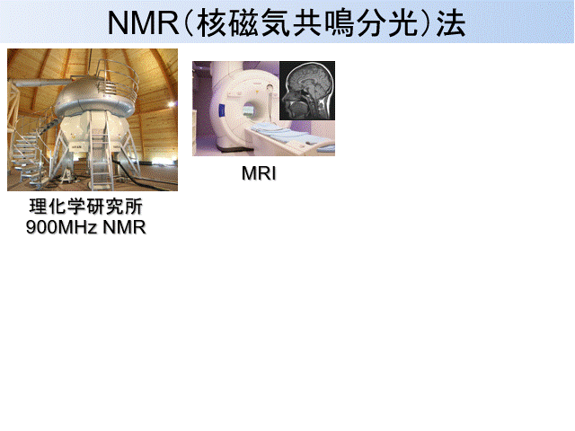
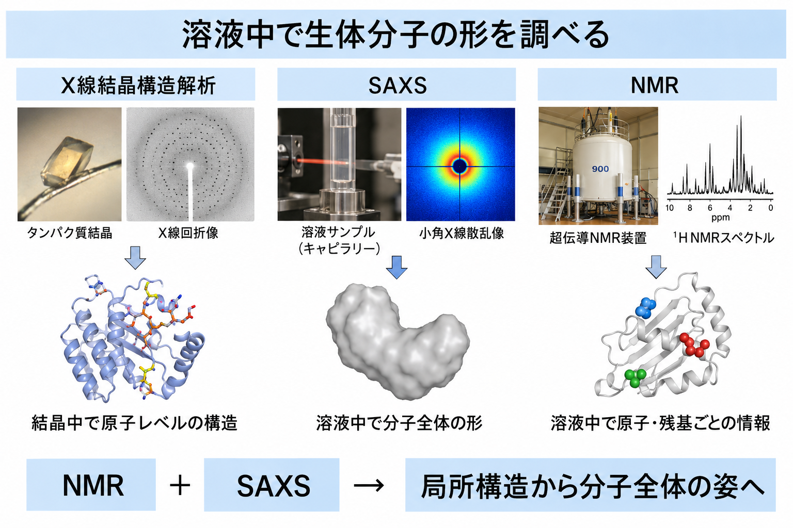
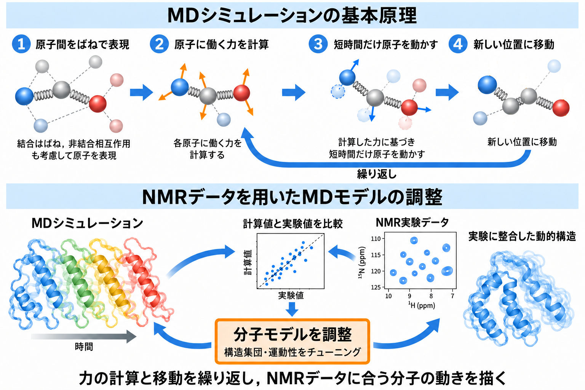
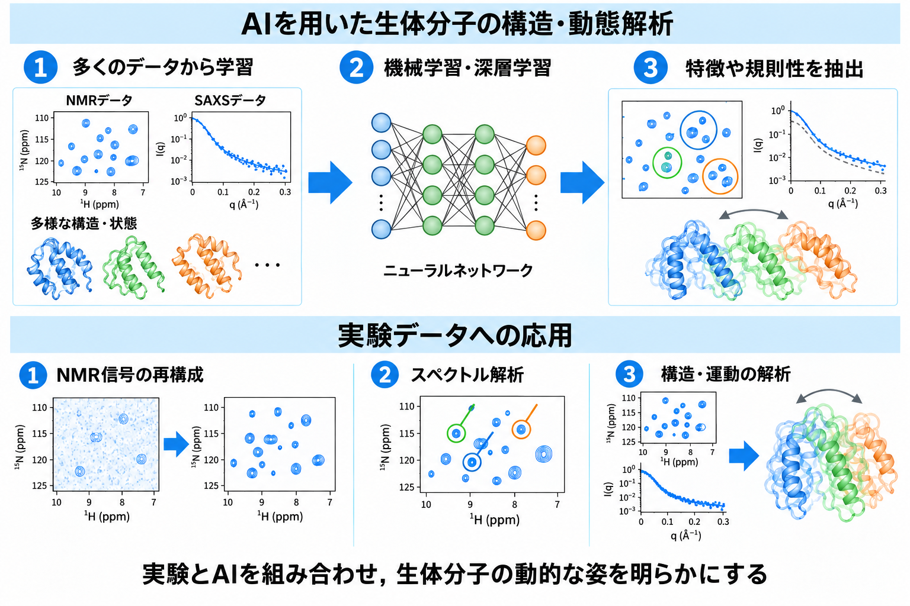

物理化学的方法で生体分子の「形」と「動き」を見る
私たちは，強磁場(磁石)，X線，分子シミュレーション，機械学習を使って生体分子の構造解析に応用しています．ここでは，それらの手法の簡単な概念と私たち研究室での活用法についてご紹介します．
Nuclear Magnetic Resonance (NMR) Spectroscopy
NMR法の基本概念
核磁気共鳴分光法(NMR, Nuclear Magnetic Resonance)は，生体分子の構造・動き・相互作用を原子分解能で観察するための手法です．生体分子は，水素(1H)，炭素(13C)，窒素(15N)，リン(31P)などの原子でできていますが，これらの原子は，実はわずかに磁石の性質を持っています．一方，NMR装置は，巨大な電磁石なので電気を流すこと(超伝導)で，内部に強い磁場が発生させることができます．この強力な磁石の中に分子を置くと，分子中の原子はS極とN極を持った棒磁石のような振る舞いをします．分子中の各原子のこの磁気的振る舞いを観察することで，分子全体の構造・動き・分子間の相互作用を原子分解能で観察することができるのです．MRI(Magnetic Resonance Imaging)という体の断面図を撮影できる医療用装置は一般にも有名ですが，MRIとNMRの２つがよく似た名前であることから想像できるように，この2つの装置は全く同じ原理で動作しています．MRIは水分子を観察してその分布の画像を作っていますが，NMRでは有機分子や生体分子を観察して，その中の原子の位置や動きの情報を含む計測データを取得します．

Small-Angle X-ray Scattering (SAXS)
小角X線散乱法の特徴と当研究室での活用

小角X線散乱法（SAXS：Small-Angle X-ray Scattering）は，溶液中の生体分子にX線を照射し，そのX線の散乱を測定することで，分子の大きさや形状を調べる方法です．X線を用いた構造解析法としては，X線結晶構造解析がよく知られています．この方法では，分子を結晶化することで原子レベルの立体構造の情報が得られます．一方，結晶という特殊な環境での分子を測定するため，得られた構造情報が溶液中や生体内の分子の姿をどこまで反映しているのか，慎重に考える必要があります．SAXSでは，分子を結晶化せず，水溶液中に溶かした状態で測定できます．原子レベルの細かな情報は得られませんが，分子全体の大まかな形状などを捉えることができます．また，柔軟に動くタンパク質の構造分布を調べる際にも役立ちます．私たちは，「生理的条件に近い環境で，生体分子がどのように振る舞うのかを調べる」ことを大切な目標としています．NMRは原子ごとの詳細な情報を得ることに優れ，SAXSは分子全体の大きさや形を捉えることを得意とします．そこで，NMRを中心とした解析にSAXSを組み合わせ，局所構造から分子全体の姿までを理解することを目指しています．
Molecular Dynamics (MD) Simulation
分子動力学計算の特徴と当研究室での活用
分子動力学計算（MD：Molecular Dynamics Simulation）は，コンピューター上で生体分子を構成する原子の動きを計算し，分子が時間とともにどのように形を変えるのかを調べる手法です．実際の原子は原子核と電子からできていますが，MDシミュレーションでは，それぞれの電子状態は直接計算せず，原子を重さや電荷をもつ球体として扱います．また，共有結合でつながった原子間の伸び縮みなどは，主にバネに似た簡単な式で表します．このような近似によって計算量を抑え，膨大な数の原子からなるタンパク質や核酸の動きをシミュレーションすることができます．単純化されたモデルではありますが，最近の計算技術の進歩により，MDシミュレーションは生体分子の構造や運動を調べるための強力な手法として広く利用されています．私たちの研究室では，実験だけでは直接捉えにくい分子の動きや構造を詳しく調べるために，MDシミュレーションを活用しています．特に，NMRなどの実験データと一致するようにあえて分子モデルを調整することで，実験情報を補い，生体分子の動的な姿をより詳しく可視化することを目指しています．

機械学習(ML)・深層学習(DL)

機械学習(ML)の活用
人工知能（AI：Artificial Intelligence）は，私たちの暮らしや社会に大きな変化をもたらし，さまざまな作業の自動化や効率化に利用されています．生命科学の分野でもAIの活用は急速に進んでおり，私たちの研究室でも，生体分子の構造や動きを解析するためにAI技術を取り入れています．AIを支える技術の一つが，コンピューターに多くのデータを学習させ，その中に潜む特徴や規則性を見つけ出す機械学習です．機械学習にはさまざまな手法がありますが，代表的なものに，生物の神経細胞のつながりを参考にした数理モデルであるニューラルネットワークがあります．このネットワークを多層化し，複雑な特徴を学習できるようにした手法を深層学習（DL：Deep Learning）と呼びます．私たちは，こうした機械学習や深層学習の技術を用いて，NMR信号の再構成やスペクトル解析，NMR・SAXSなどから得られる実験データに基づく分子構造の解析に取り組んでいます．実験とAIを組み合わせることで，従来の方法だけでは捉えにくかった生体分子の構造や動きを，より詳しく明らかにすることを目指しています．